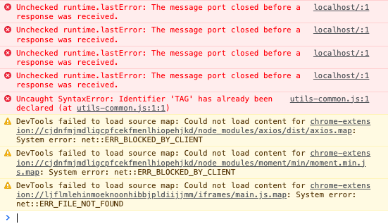
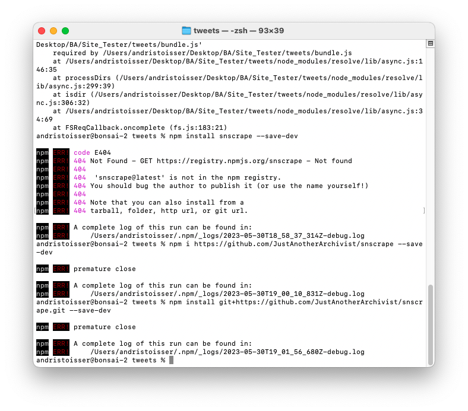
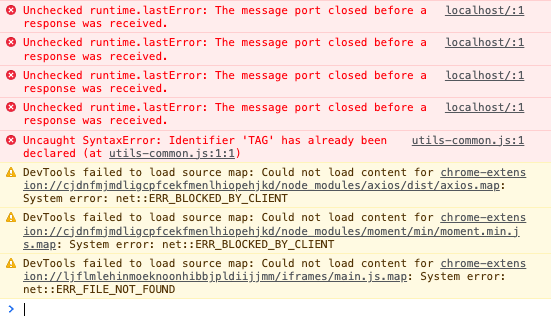
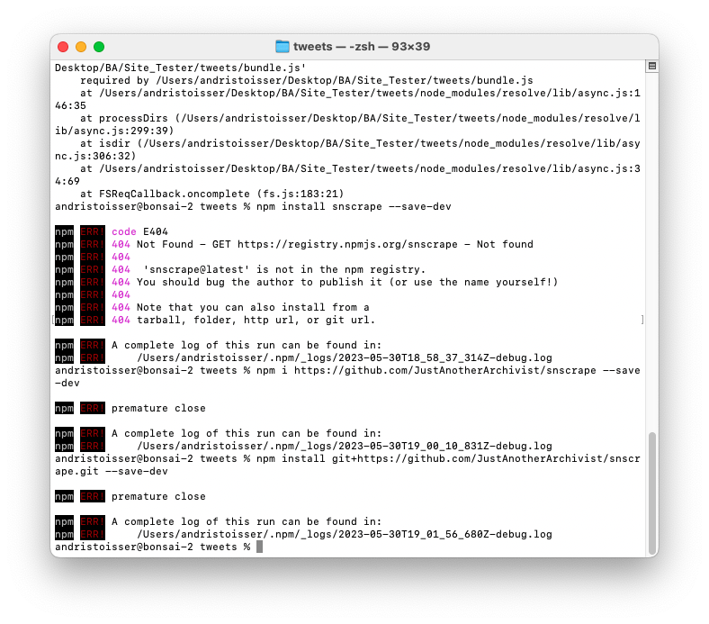

#CancelTheCulture
Thema und Fragestellung:
Zensur ist omnipräsent. Wir werden tagtäglich mit ihr konfrontiert, sei dies heutzutage bewusst in den Nachrichten in den Bereichen der Politik, oder auch ganz unbewusst durch das Konsumieren von "explicit content" in Musik, Film oder Internet-Videos.
Die Cancel Culture wird von einigen als eine Form der Zensur betrachtet, da sie durch öffentlichen Druck und Boykottmaßnahmen dazu neigt, Meinungen, Ansichten oder künstlerische Werke zu unterdrücken, die als unangemessen oder beleidigend empfunden werden. Dies kann zu einem einschüchternden Effekt führen und die freie Meinungsäußerung sowie den offenen Diskurs einschränken, da Menschen aus Angst vor sozialen oder beruflichen Konsequenzen davor zurückschrecken, kontroverse oder abweichende Meinungen zu äußern. Dennoch gibt es unterschiedliche Standpunkte zu diesem Thema, wobei einige die Cancel Culture als notwendiges Mittel sehen, um gegen Diskriminierung und Ungerechtigkeiten vorzugehen, während andere ihre negativen Auswirkungen auf die Meinungsfreiheit betonen.
Relevanz des Themas:
Zensur ist ein historisches Thema, das auch in der heutigen Zeit nicht vergessen oder unterschätzt werden sollte. Der Umgang mit Zensur, wie beispielsweise die Gegenbewegungen gegen die Einschränkung der Meinungsfreiheit in politisch unterdrückten Ländern, verdeutlicht, dass es weiterhin von großer Relevanz ist. Darüber hinaus hat die politische Zensur von Texten, Literatur und Kunst einen bedeutenden Einfluss auf den gesellschaftlichen Fortschritt verschiedener Kulturen ausgeübt. In unserer heutigen Internet-Ära besteht die Möglichkeit, dass jeder durch die Verwendung des Hashtags #CancelCulture zur Zensur aufruft. Leider wird dies jedoch zunehmend missbraucht.
Motivation:
Zensur in all ihren Formen ist für mich ein äußerst fesselndes und inhaltsreiches Thema. Der provokative Kontext in unserer gegenwärtigen Zeit bietet zudem eine wertvolle Informationsquelle und fungiert als "Eye-Catcher" für ein gestalterisches Projekt.
Gestalterische Thesis:
Das Internet, die Nutzer von sozialen Netzwerken und Medien sowie deren Meinungen bilden die Grundlage meiner Arbeit.
Mithilfe von APIs, Webscrapern und eigens entwickelten Tools erstelle ich eine Website, die die schier unendliche Anzahl öffentlicher Aufrufe zum "Canceln" von Inhalten, Personen oder Meinungen aufzeigt. Das gesammelte Material soll zusätzlich archiviert werden.
Kulturgeschichtliche Thesis
1. Social Media & Data Gathering / Scraping
In einem ersten, längeren Teil habe ich mich intensiv damit beschäftigt, wie ich an Informationen und Daten aus den sozialen Netzwerken gelangen kann. Dies stellte sich als große Herausforderung heraus, da die von mir bevorzugten sozialen Netzwerke wie 'Twitter', 'Instagram' oder 'Facebook' keine kostengünstigen APIs zur Verfügung stellen.
Was ist eine API?
Eine API (Application Programming Interface) ist ein Satz von Befehlen, Funktionen, Protokollen und Objekten, die Programmierer verwenden können, um eine Software zu erstellen oder mit einem externen System zu interagieren. Sie stellt Entwicklern Standardbefehle für die Ausführung allgemeiner Operationen zur Verfügung, so dass Codes nicht von Grund auf neu geschrieben werden müssen.
Die API – auch Programmierstelle genannt- ermöglicht es demnach Anwendungen miteinander zu kommunizieren. Die API ist nicht die Datenbank oder gar der Server, sondern der Code, der die Zugangspunkte für den Server regelt und die Kommunikation ermöglicht.
Somit wird der Datenaustausch zwischen verschiedenen Systemen um ein Vielfaches beschleunigt und vereinfacht.
Weshalb Data Scraping?
Informationsgewinnung:
Durch das Sammeln von Daten erhalte ich wertvolle Informationen, die mir bei meiner Arbeit helfen können. Ich kann das Verhalten von Nutzern besser verstehen, Trends auf dem Markt erkennen und die Präferenzen meiner Kunden kennenlernen. Diese Einblicke ermöglichen es mir, fundierte Entscheidungen zu treffen und meine Designs gezielt anzupassen.
Wissensentwicklung:
Das Sammeln von Daten ermöglicht es mir, neues Wissen zu generieren und mein vorhandenes Wissen zu erweitern. Durch die systematische Erfassung und Analyse von Daten kann ich Muster, Zusammenhänge und Trends entdecken, die mich zu neuen Erkenntnissen führen. Dadurch verbessere ich meine gestalterischen Fähigkeiten und kann innovative Lösungen für meine Projekte entwickeln.
Erkennung von Mustern und Zusammenhängen:
Als Gestalter ist es wichtig, Muster und Zusammenhänge in den Daten zu erkennen. Durch das Sammeln und Analysieren großer Datenmengen kann ich versteckte Zusammenhänge und Trends aufdecken, die sonst möglicherweise unentdeckt geblieben wären. Diese Erkenntnisse helfen mir, kreative Entscheidungen zu treffen.
Die Verwendung von Daten als Designerin ermöglicht es mir, meine Arbeit fundierter zu gestalten. Vor allem eröffnet es mir jedoch neue Möglichkeiten, die gesammelten Daten visuell darzustellen und gestalterische Arbeiten zu kreieren.
Nach einigen fehlgeschlagenen Versuchen, mein Projekt mit einem möglichst kleinen Budget umzusetzen und mit Python und Javascript eigene Scraper zu stellen, habe ich mich letztendlich für das soziale Netzwerk Reddit entschieden, da dieses Entwicklern bisher seine API kostenlos zur Verfügung gestellt hat.
 



Was ist 'Reddit'?
Reddit ist eine Social-Media-Plattform, auf der Benutzer Inhalte teilen, diskutieren und bewerten können. Es besteht aus vielen Unterforen, sogenannten "Subreddits", die verschiedene Themen abdecken. Reddit ist bekannt für seine vielfältige Gemeinschaft und das Votingsystem, das die beliebtesten Beiträge nach oben bringt.
Weshalb 'Reddit'?
Jedoch kann Reddit auch kontrovers sein, da es eine große Anzahl von Benutzern mit unterschiedlichen Meinungen und Hintergründen gibt. Diese Vielfalt führt zu Debatten und Auseinandersetzungen über kontroverse Themen. Darüber hinaus erlaubt Reddit anonymes Posten, was gelegentlich zu provokativen oder beleidigenden Beiträgen führen kann.
Mithilfe der Reddit-API habe ich einen "Scraper" erstellt, der es mir ermöglicht, das soziale Netzwerk nach Hashtags zu durchsuchen. Alle 30 Sekunden wird eine Anfrage an die Reddit-Server gesendet, um 10 Beiträge im Zusammenhang mit dem Hashtag #CancelCulture zu finden und die entsprechenden Informationen für mich abzuspeichern.
Es kann zusätzlich frei nach jeglichen Hashtags gesucht werden.
Volatilität des Internets
Das Internet und die Sozialen Medien sind volatil, weil sie sich konstant wandeln und weiterentwickeln, sowohl technologisch als auch in Bezug auf die Inhalte. Neue Plattformen und Trends entstehen, während andere an Bedeutung verlieren.
Dies traf genau während meiner Arbeit ein. Reddit hat offensichtlich bei Twitter abgeschaut und beschlossen, ab Sommer 2023 seine Daten-API kostenpflichtig zu machen. Das führte dazu, dass viele Subreddits in den privaten Modus wechselten und meine Arbeit dadurch erschwert wurde.
2. UNTERSUCHUNG Sprachsynthese - 'Text-to-Speech'
Die Anonymität im Internet wird aus verschiedenen Gründen missbraucht. Ein Hauptgrund ist, dass Anonymität es den Menschen ermöglicht, unerkannt zu bleiben und möglicherweise rechtliche Konsequenzen oder soziale Sanktionen zu umgehen. Dies kann dazu führen, dass einige Menschen ihre Anonymität ausnutzen, um Hass, Belästigung, Betrug oder andere schädliche Handlungen zu begehen. Darüber hinaus kann Anonymität dazu führen, dass Menschen sich mutiger fühlen, ihre Meinungen oder Ansichten zu äußern, auch wenn sie beleidigend, diskriminierend oder kontrovers sind.
Wenn man der Anonymität im Internet ein Gesicht und eine Stimme gibt, kann dies mehrere Auswirkungen haben. Zum einen kann es dazu führen, dass Menschen verantwortungsvoller und vorsichtiger mit ihren Handlungen und Äußerungen umgehen, da sie sich bewusst sind, dass sie nicht mehr vollständig anonym sind. Dies könnte zu einer Reduzierung von beleidigendem oder schädlichem Verhalten führen.
DIGITAL HUMANS VIDEO GENERATOR
Mit der generativen KI von d-id.com habe ich begonnen, Tweets zu vertonen, um den anonymen Nutzern eine Stimme und ein Gesicht zu geben und die oben beschriebene Wirkung zu testen. Obwohl mich das Arbeiten mit KI interessierte, war ich von den Ergebnissen nicht überzeugt und habe mich daher gegen die Nutzung von KI und TTS entschieden.
3. ENTWÜRFE & AUSARBEITUNG WEBSEITE
Eine visuelle Darstellung eines androgynen Kopfes in P5 in Kombination mit gescrapten, sortierten und gefilterten Tweets.
In diesem Versuch habe ich mich darauf konzentriert, die Informationen auf ein Minimum zu begrenzen.
Zusätzlich habe ich die Möglichen Hashtags eingegrenzt und es werden keine Bilder, Videos oder Links angezeigt.
Durch die Verwendung einer Random Face API und die TTS-Funktion gängiger Browser habe ich untersucht, welche Wirkung erzielt werden kann, wenn zufällige Tweets vorgelesen werden.
Die statische Darstellung von Daten kann oft unspannend wirken. Deshalb habe ich untersucht, welche Wirkung ich erzielen kann, wenn ich visuelle Untersuchungen mit den 'gescrapten' Tweets erstelle.
Nachdem ich ein zufriedenstellendes Backend und Skript mit der Reddit-API erstellt hatte, begann ich mit verschiedenen Visualisierungen der gesammelten Daten.
Um die Informationsüberflutung zu veranschaulichen, entschied ich mich dafür, Bilder, Videos und Tonaufnahmen anzuzeigen und abzuspielen.
4. CODING
SNIPPET 'SCRIPT.JS'
// ..
async function fetchAndDisplayPost(hashtag) {
const response = await fetch(`https://www.reddit.com/r/all/search.json?q=${hashtag}&sort=new`);
const data = await response.json();
if (data.data && data.data.children.length > 0) {
const posts = data.data.children;
const existingPosts = Array.from(postContainer.children).map(row => row.getAttribute('data-post-id'));
const uniquePosts = posts.filter(post => !existingPosts.includes(post.data.id));
if (uniquePosts.length > 0) {
latestPost.textContent = '';
mediaContainer.textContent = '';
document.getElementById('most-upvoted-comment').textContent = '';
document.getElementById('most-downvoted-comment').textContent = '';
const randomPost = uniquePosts[Math.floor(Math.random() * uniquePosts.length)].data;
const newRow = createPostRow(randomPost);
newRow.setAttribute('data-post-id', randomPost.id);
postContainer.prepend(newRow); // Add the new post at the top of the container
latestPost.textContent = randomPost.selftext;
// ..
Das bereitgestellte Skript führt verschiedene Aufgaben aus, um die Funktionalität der Webseite zu ermöglichen.
Zunächst werden mit Hilfe der entsprechenden IDs (postContainer, latestPost, mediaContainer) die benötigten Elemente aus dem HTML-Dokument abgerufen. Diese Elemente dienen zur Anzeige der Beiträge und ihrer zugehörigen Inhalte.
Das Skript definiert eine Funktion namens createPostRow, die für das Erstellen einer neuen Zeile mit Beitragsdetails zuständig ist. Diese Funktion erhält ein Beitrag-Objekt als Eingabe und generiert dynamisch die HTML-Elemente, die zur Anzeige des Autors, des Subreddits und des Titels des Beitrags benötigt werden.
Zusätzlich gibt es eine asynchrone Funktion namens fetchAndDisplayPost, die das Abrufen und Anzeigen eines einzelnen Beitrags basierend auf dem eingegebenen Hashtag behandelt. Sie verwendet die Fetch-API, um Daten aus der Reddit-API im JSON-Format abzurufen. Die Funktion überprüft, ob in den empfangenen Daten Beiträge vorhanden sind, und filtert etwaige Duplikate aus. Falls es einzigartige Beiträge gibt, werden zuvorige Beitragsinhalte, Medien und Kommentare gelöscht. Anschließend wird ein zufälliger Beitrag ausgewählt, mithilfe der createPostRow-Funktion eine neue Zeile erstellt und diese dem postContainer-Element hinzugefügt. Der Inhalt und die Medien des Beitrags werden entsprechend ihres Typs angezeigt, z. B. Bilder, YouTube-Videos, Reddit-Galerien, Videos oder Links. Die Funktion ruft außerdem eine weitere Funktion namens displayComments auf, um die am meisten hoch- und heruntergevoteten Kommentare für den Beitrag abzurufen und anzuzeigen.
Die displayComments-Funktion ruft Kommentare für eine bestimmte Beitrags-ID ab, sortiert sie anhand ihrer Bewertungen (Upvotes minus Downvotes) und aktualisiert die entsprechenden Elemente im HTML-Dokument mit den am meisten hoch- und heruntergevoteten Kommentaren.
Das Skript richtet einen Ereignislistener für das hashtagInput-Feld ein, der das Abrufen und Anzeigen von Beiträgen auslöst, wenn ein Hashtag eingegeben wird. Es definiert auch eine asynchrone Funktion namens startPostRefresh, die kontinuierlich neue Beiträge basierend auf dem eingegebenen Hashtag abruft und anzeigt. Diese Funktion wird aufgerufen, um den kontinuierlichen Aktualisierungs- und Aktualisierungsprozess zu starten.
Darüber hinaus sucht das Skript automatisch nach dem Hashtag "cancelculture", wenn die Seite geöffnet wird, indem es einen Ereignislistener für das DOMContentLoaded-Ereignis hinzufügt. Dieser Ereignislistener setzt den initialen Hashtag-Wert und ruft fetchAndDisplayPost auf, um Beiträge zum initialen Hashtag anzuzeigen.
Insgesamt ermöglicht dieses Skript Benutzern das Suchen von Beiträgen basierend
Einige der verwendeten & gescrapten Informationen für die Visualisierung sind:
- 'author': Der Benutzername des Beitragserstellers.
- 'subreddit_name_prefixed': Der Name des Subreddits, in dem der Beitrag eingereicht wurde.
- 'title': Der Titel des Beitrags.
- 'selftext': Der Inhalt des Beitrags.
- 'url': Die URL, die mit dem Beitrag verbunden ist.
- 'score': Die Punktzahl des Beitrags (Upvotes - Downvotes).
- 'num_comments': Die Anzahl der Kommentare zum Beitrag.
- 'author_gold_count': Die Anzahl der Gold-Auszeichnungen, die der Beitragsersteller erhalten hat.
- 'author_karma': Der Karma-Punktestand des Beitragserstellers.
- 'upvote_ratio': Das Verhältnis von Upvotes zu Gesamtstimmen für den Beitrag.
- 'created_utc': Der UTC-Zeitstempel, wann der Beitrag erstellt wurde.
- 'all_awardings': Ein Array von Auszeichnungsobjekten, die der Beitrag erhalten hat.
- 'link_flair_text': Der Flair-Text, der mit dem Beitrag verbunden ist.
<!DOCTYPE html>
<html>
<head>
<title>#CancelTheCulture</title>
<link rel="stylesheet" type="text/css" href="style.css">
</head>
<body>
<div class="container">
<div class="column-left">
<div class="empty-row">#CancelTheCulture</div>
<div class="title-row horizontal-line">
<div class="column">Username</div>
<div class="column">Subreddit</div>
<div class="column">Post</div>
</div>
<div id="post-container"></div>
</div>
<div class="column-right">
<form id="search-form">
<input type="text" id="hashtag-input" placeholder="Enter hashtag">
</form>
<div id="latest-post"></div>
<div id="most-upvoted-comment"></div>
<div id="most-downvoted-comment"></div>
<div id="media-container"></div>
</div>
</div>
<script src="script.js"></script>
</body>
</html>
5. Projekt
BA-THESIS
Gestalterische Bachelor-Thesis 2022Visuelle Kommunikation und Digitale Räume
IDCE, HGK Basel, FHNW
DANK
Mentor*innen-Team:Jonas Schaffter | Viola Diehl | Ted Davis